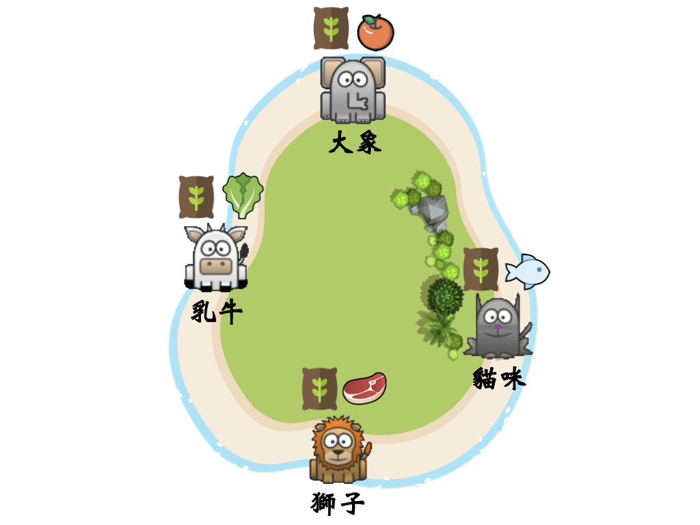
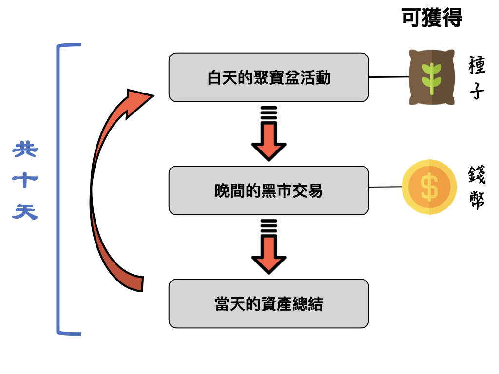
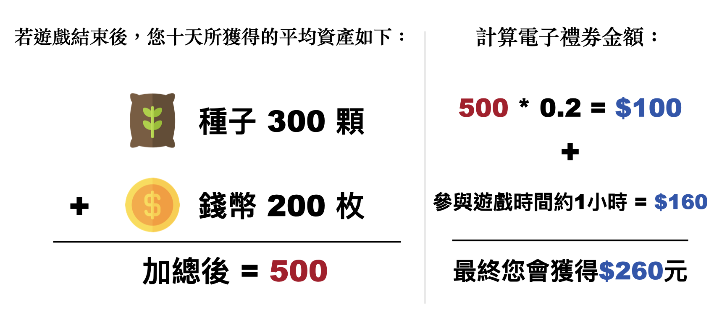
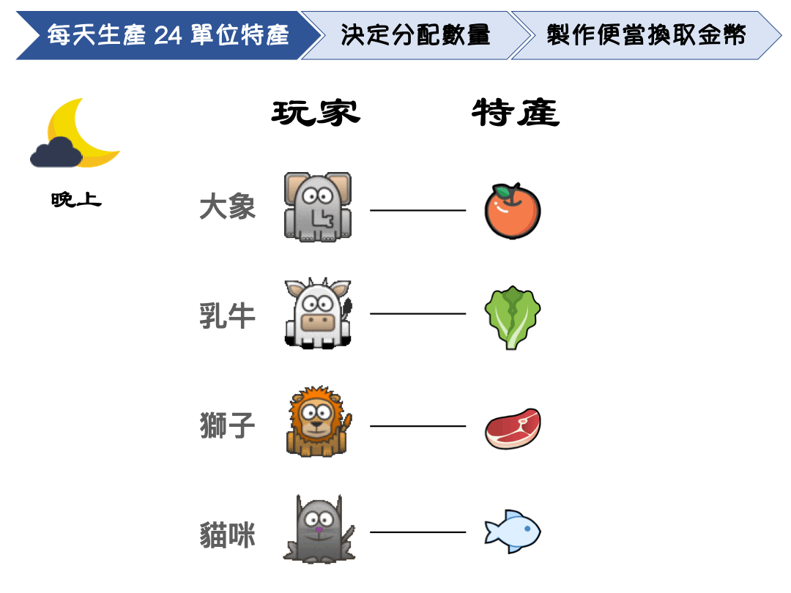
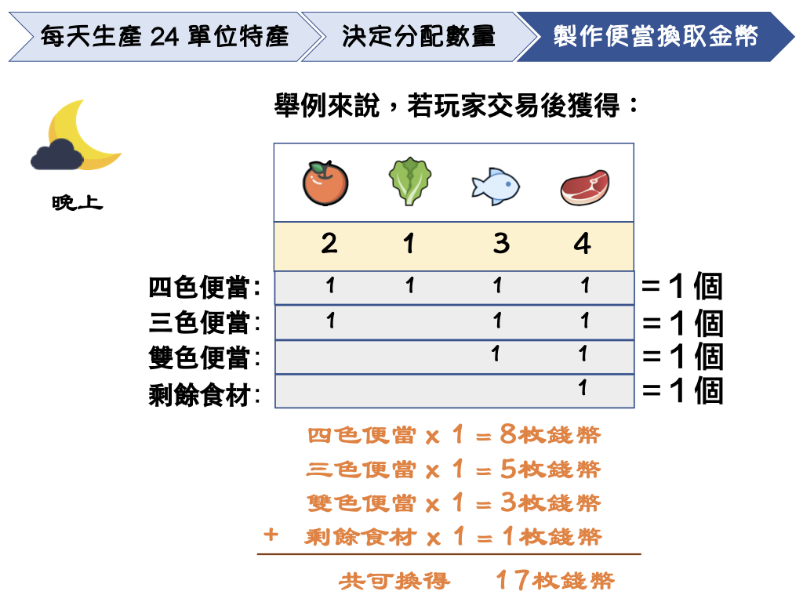
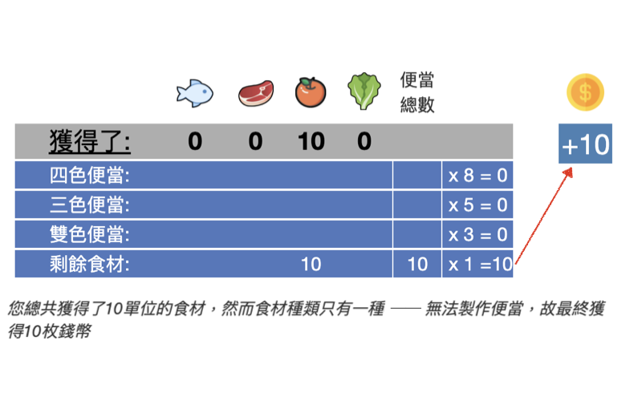
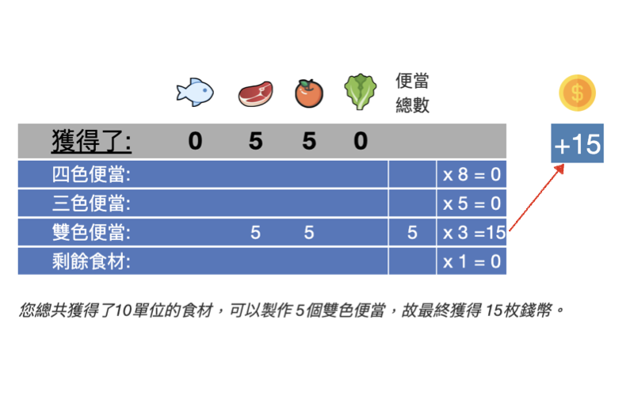
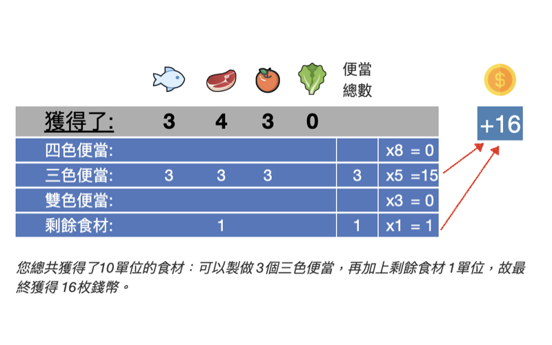
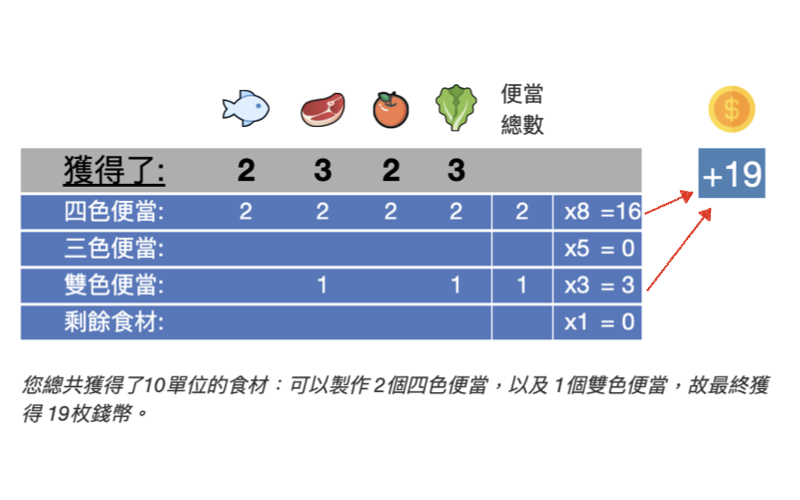

在遊戲中，您的角色是一位島民，將與其他3位玩家在線上進行即時互動。
身為島上居民，您的資產有 種子 以及您自己該區的特產 (特產最後可替換為等值的錢幣)。在遊戲進行時，您將以手上的資產進行交易，並且您的目標是將手中的 資產數量最大化。擁有愈多的種子與錢幣，便可獲得愈大面額的電子禮券。
並且在遊戲開始時，系統會隨機指派四位島民中的其中一位擔任 島主，您也有機會被指派擔任島主。

遊戲開始後總共會進行 10天，每天又分成了兩個部分： 白天的聚寶盆活動 以及 晚間的黑市交易。
系統當天會結算所有玩家的資產，再開始下一天。每天的資產為個別計算，不進行累計。
10天結束後，除了參與遊戲的固定報酬(NT$160/時)，系統將會計算玩家10天總共的資產平均數量，且利用以下的公式來計算支付玩家額外的電子禮券：
(10天平均種子數 ＋ 10天平均錢幣數) x 0.2 = 玩家額外所獲得的金額

- 玩家在本遊戲中所獲得的所有報酬將於遊戲結束後以線上電子禮券形式支付
- 約五到七個工作天後，系統會寄到方才您所提供的電子信箱
- 電子禮券可用於全台 7-Eleven統一超商
白天的聚寶盆活動

每天清晨時，系統會派船隻分給島上每位居民各100顆種子。
白天的聚寶盆活動

在此島中間有一神奇的聚寶盆，此聚寶盆為島主所擁有，只要投入種子，投入的數量會變成1.5倍。
每位島民每天早上可以決定要奉獻多少手中擁有的種子給聚寶盆(範圍介於0到100)。
只有島主會知道你奉獻了多少顆種子，其餘玩家無法得知。下頁將介紹島主這個角色。
白天的聚寶盆活動

遊戲開始時，系統會指派四位玩家中的其中一位擔任島主。
島主擁有絕對的權力，決定如何分配被聚寶盆加碼後的種子，並且島主在遊戲中十天始終為同一位玩家。
島主的工作為 任意分配被加碼後的種子給每位島民(包含島主自己)。
不管每位島民的實際貢獻為何，島主可以選擇 平均分配種子給所有玩家們，或島主也可決定把所有種子都分配給自己，又或是介於這兩者之間的所有分配方式也都可行。島主具有權利可以自行決定如何分配。
舉例來說，若每位玩家都選擇奉獻50顆種子，聚寶盆中總共將會有200顆種子 (50顆種子 x 4位玩家)，此時神奇的聚寶盆便會將這200顆種子增加為300顆 (200顆種子 x 1.5) ，而島主可以將這300顆種子任意分配給每位島民(包括自己)。
晚間的黑市交易
除了種子外，每位島民還可以透過自己該區的特產 來賺錢，每天每位島民都會產出 24單位的特產。
晚間的黑市交易

到了晚上，島民可以到黑市中與其他玩家進行交易。
黑市交易中，每位島民可以 任意分配自己的特產給四位玩家(包含自己)，但此時無法得知其他玩家分配給您的特產數量。
晚間的黑市交易
黑市交易後，系統會利用玩家手中擁有的食材製作便當，不同菜色數量的便當可以獲得不同數量的錢幣，規則如下：
- 每四種不同種類的食材，可以製作一個四色便當，每一個四色便當可以換得 8 枚錢幣
- 每三種不同種類的食材，可以製作一個三色便當，每一個三色便當可以換得 5 枚錢幣
- 每兩種不同種類的食材，可以製作一個雙色便當，每一個雙色便當可以換得 3 枚錢幣
- 若手上只有剩下一種食材，則每一單位食材可以換得 1 枚錢幣
下頁將會以更多圖表舉例說明便當換取錢幣的計算方式。
下圖表可以發現雖然玩家獲得的食材數量皆為10單位，但由於獲得食材的種類數量不同，可以製作不同菜色數量的便當，最後所得到的錢幣數量也不同。 
下圖表可以發現雖然玩家獲得的食材數量皆為10單位，但由於獲得食材的種類數量不同，可以製作不同菜色數量的便當，最後所得到的錢幣數量也不同。 
白天的聚寶盆活動
在聚寶盆活動中，島民們可以決定自己想要奉獻多少顆種子給聚寶盆(範圍介於0到100)。
當所有島民都做好決定後，神奇的聚寶盆會使盆中的種子增加為1.5倍。系統將指派島主可以 任意分配這些種子給全部玩家。當島主分配完種子之後，您將會在螢幕上看到您所獲得到的種子數量。
晚間的黑市交易
黑市交易中，您手上會有24單位的特產，並且您可以決定如何分配給四位島民(包括您自己)，且一定要分完。
當所有島民都完成自己特產的分配後，您將會在螢幕上看到每位玩家給予您多少食材，並且系統會幫您計算各種不同菜色的便當數量，以及您所獲得的錢幣。
當天的資產總結
當白天的聚寶盆活動與晚間的黑市交易都結束後，您將會在螢幕上看到：每位島民當天總共獲得多少顆種子以及多少枚錢幣。
遊結束後系統將會以 10天的平均資產總結來計算額外的電子禮券金額。
因為本實驗為與其他玩家進行線上即時互動，因此每回合交易時，您必須在合理時間內做出決定。
如果您在遊戲中閒置的時間過長，您將 喪失在此實驗期間可能獲得的任何獎金。
如果您的遊戲合作夥伴遇到斷線問題，遊戲會立即終止，但您仍將獲得完成實驗的基本報酬。
若您在遊戲中有遇到任何問題，例如頁面無法載入或遊戲無法順利運作，請您嘗試 「重新整理網頁」！！！